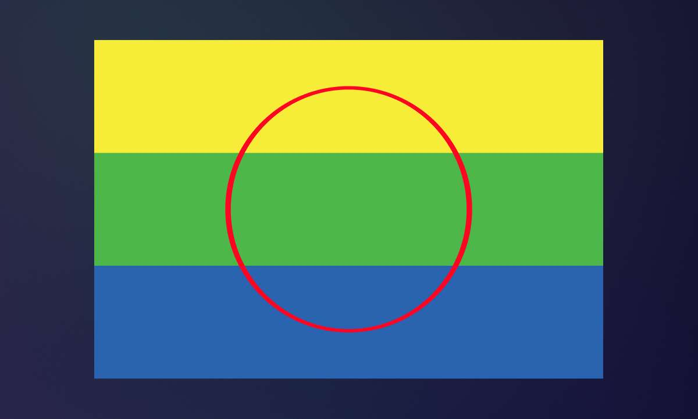

Indigenous
Top Indigenous Creatives from Peguis First Nation

Key Takeaways
- Jordan Stranger, Leanne Jones, Diandre Thomas Hart, and Fredrick Spence are leading the way in art, design, and creative storytelling.
- Designers like Alyssia Sutherland are bringing Indigenous fashion to international stages.
- Joshua Whitehead is amplifying Indigenous stories through award-winning writing.
- William Prince is sharing the voice of Peguis with the world through music.
- Spotted Eagle Handmade and other beadwork artists are preserving culture and tradition through their craft.
When I think of Peguis First Nation, I think of my roots. I grew up in Selkirk, the original intended land of Peguis, surrounded by people who shared this deep connection. For many of us, especially those in my generation, this is a time of reclaiming our strength, taking up space, and showing the world the incredible talent that has always been here.
Seeing Indigenous creatives from Peguis First Nation shine on global stages is empowering. Whether it’s fashion in Milan, a JUNO-winning voice, or bold art on gallery walls, it encourages me to do the same. Our voices deserve to be heard.
This list is more than a collection of names. It’s a celebration of storytellers, designers, entrepreneurs, and artists who represent the heart of Peguis.
Indigenous Visual Artists and Designers from Peguis First Nation

Illustrations By Leanne Jones
Growing up, I spent many hours at my Nana’s house. She had Indigenous artwork on the walls painted by my uncle and APTN was always on the TV because another uncle was acting in a show. That connection to family, art, and storytelling shaped how I see the world as a designer.
Jordan Stranger
Jordan is one of the most recognized Indigenous visual artists from Peguis. His breathtaking pencil crayon work on black paper is deeply emotional and spiritual. I had seen his work for years before realizing he was the artist behind it. As someone who graduated from the same program I did, his success inspires me to take up more space in the creative industry.
Leanne Jones
I’m proud to be part of this growing wave of Indigenous entrepreneurs in creative industries. Through my company, Leanne Digital, I focus on marketing and branding to help other Indigenous companies and organizations be seen and heard. My work as an Indigenous graphic designer in Canada is about more than design. It’s about visibility, storytelling, and helping others take up space.
Learn More About My Indigenous Graphic Design Services
Diandre Thomas Hart
Diandre is the Executive Director of Buffalo Hyde Creative. Her work in digital media, photography, and videography has taken her to incredible projects, including documenting the Treaty One team’s trip to Milan Fashion Week. She represents Peguis with creative strength and vision.
Learn More About Diandre Thomas Hart
Fredrick Spence
Fredrick is a talented Indigenous carver and crafter. He works with soapstone, runs healing workshops, and dreams of opening an Indigenous art gallery. His art is more than visual expression. It is community building and cultural preservation.
Indigenous Fashion Designers from Peguis First Nation
Powwows have always inspired me. The colors of the regalia, the movement, and the feeling of community are unforgettable. That vibrancy often shows up in my design work, and it is the same creative energy I see in these incredible Indigenous fashion designers.
Alyssia Sutherland
Alyssia is the designer behind Ally’s Ribbons. She blends traditional ribbon skirt artistry with modern fashion, proudly representing Peguis at Milan Fashion Week. Her work shows how Indigenous fashion can be both rooted and visionary.
Indigenous Writers and Storytellers
Joshua Whitehead

Book Cover of Joshua Whitehead book Jonny Appleseed
Joshua is a two-spirit Oji-Cree/nehiyaw author from Peguis and one of the most celebrated Indigenous writers and storytellers in Canada. His novel Jonny Appleseed won Canada Reads 2021 and captured hearts across the country.
Joshua and I went to high school together in Selkirk. Seeing someone from my own community and school make such a powerful impact in the literary world is incredibly meaningful to me. His writing is raw, honest, and full of heart. It proves that incredible stories are growing right here in our own community.
Follow Joshua On Instagram Here
Indigenous Musicians from Peguis First Nation
Music has always been a heartbeat in Peguis. From powwow drums to world tours, we are part of a long line of Indigenous musicians in Canada making waves far beyond home.
William Prince
William Prince is a celebrated folk and country musician whose voice carries the stories of Peguis to audiences around the world. His albums Earthly Days, Reliever, and Gospel First Nation have earned national acclaim. His music speaks of love, faith, and land, and it inspires so many of us to stand proud in who we are.
Beyond big names like William, there are countless singers and performers who bring life to community events and powwows every year. They are part of the story too.
Learn More About William Prince Here
Manitoba Beadwork Artists and Traditional Crafters

There are so many Manitoba beadwork artists, seamstresses, and traditional makers in Peguis. Many of them sell their work at local craft markets and online, creating pieces that carry our stories and teachings through every bead, stitch, and pattern. These Indigenous carvers and crafters keep culture alive in such a beautiful and meaningful way.
One of those artists is my cousin, the creator behind Spotted Eagle Handmade
, whose beadwork is bold, intricate, and full of spirit. I also had the privilege of designing her logo, which made the project feel even more special. Seeing her build her business and share her craft with the world fills me with pride.
You can also find incredible work from beadwork artists and crafters at local shops and boutiques such as Teecka Aboriginal Boutique,Winnipeg Trading Post, Dene Cree Designs, and Indigenous Reflections, to name a few. These spaces are helping Indigenous creatives reach wider audiences while keeping traditional craft alive.
If you see a craft table or come across an Indigenous-owned boutique, stop and take a closer look. These are the hands that hold generations of knowledge. Support them, follow them, and help their art continue to thrive.
Celebrating Indigenous Entrepreneurs in Creative Industries
I want people reading this, whether they are from Peguis or beyond, to feel empowered and inspired. We are strong, talented, and resourceful.
The Indigenous creatives from Peguis First Nation featured here are only the beginning. Ten years from now, I can only imagine the artists, designers, and storytellers who will emerge. I hope this list inspires more of us to step forward, take up space, and share our gifts with the world.